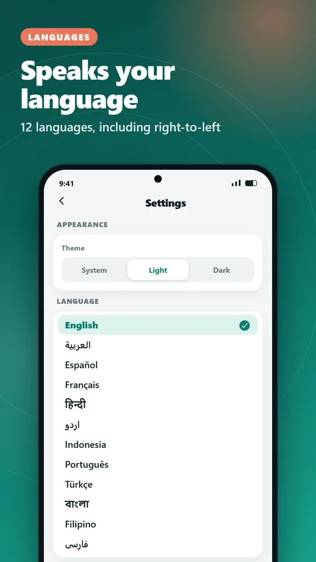

Créez tous les codes QR
- Texte, liens, e-mail, téléphone, SMS, WhatsApp, Wi-Fi, fiches de contact, événements de calendrier et lieux sur la carte
- Aperçu en direct pendant la saisie
- Utilisez votre position actuelle pour les codes de carte
Créez de beaux codes QR avec logo et couleurs. Scannez vite. Enregistrez.
Disponible sur Google PlayGratuit · Sans compte · Vos données restent sur votre téléphone
DiyaQR est un créateur et lecteur de codes QR rapide et élégant. Créez un code QR pour un lien, un Wi-Fi, un contact, un événement ou un lieu, personnalisez-le comme vous voulez, puis enregistrez-le ou partagez-le en quelques secondes. Scannez n’importe quel code QR ou code-barres avec l’appareil photo ou depuis une image, et agissez en un geste.



Aucun compte requis. Vos codes et vos scans restent sur votre téléphone.
Disponible sur Google PlayTéléchargez DiyaQR et créez dès aujourd’hui votre premier code QR.